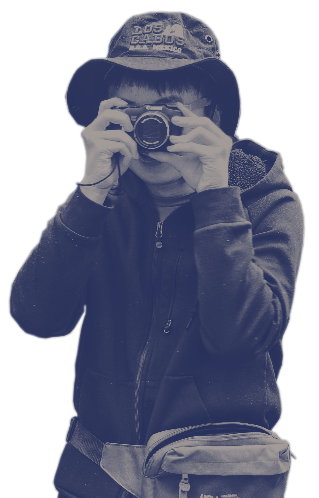

Andrew Yuen
"I make videos"
Video Production and Cinematography
Featured
Middle-One — Written and Directed by Andrew Yuen
2019 | YouTube
A young boy is caught between his overbearing father and defiant brother.
More Videos